우리가 장비를 올리는 이유는 두가지가 있다
1. 장비 자체의 공격력 스팩
2. 오버로드 장비 옵션
깡오버라고 하면 보통 오버로드 장비를 0000 레벨 상태로 옵션작 안 하고 냅두는 걸 말하며 쌀먹 육성법의 대표적인 방식이지만
매우매우 비효율적이니 비합리적인 육성 방법이다.
깡오버만 할 거면 애초에 키울 생각을 말자
장비작에는 3가지 재화가 필요한데
1. 기업장비
2. 장비강화재료
3. 모듈
이 중에서 수급량대비 소모량이 가장 큰 것부터 나열하면
기업장비 >>> 모듈 >> 장비강화재료
(특특요 크라켄 기준)
모듈작은 4우 쌀먹이 가능하다
수학적으로 한 캐릭 4우 쌀먹에 필요한 모듈 수는 20-30 개 정도로 크라켄만 도는 경우 한달 수급량이 100개 정도인 것을 고려하면 한참 남는다
물론 모듈은 아무리 남아도 2줄작 3줄작하기 시작하면 순식간에 증발해버리지만.. 각자 상황에 맞게 타협이 가능한 재화라는 것.
근데 장비는 한 달에 4개 못 얻는다
협전+고철상점 업데이트로 장비 수급량이 늘어나긴 했지만, 크라켄만 도는 경우 한 달에 한 개 정도 얻는 꼴
장비강화재료도 남아도는 재화라고 하기는 어렵지만, 수급량에 비해 소모속도가 쪼달릴 정도는 아니여서 상대적으로 여유가 있는 편.
전 장비는 항상 남던데요?
그건 크라켄 돌기 전에 장비를 오지게 모아놔서 그런 것일 뿐.
크라켄만 돌다보면 필연적으로 장비만 거덜나게 되어있다.
뉴비 할배 상관 없이 언젠간 장비는 거덜난다.
할배들은 장비를 많이 캐두어서 거덜나는 시점이 많이 뒤로 늦춰질 뿐..
2주년 유입들은 아마 몇 달 전쯤 ~ 최근쯤 부터 장비 부족에 더 이상 크라켄을 못 도는 상황일 것임.
왜냐면 내가 2주년 근처 유입인데 3주 전부터 크라켄 안 돌고 장비만 캐고 있음
곧 있으면 1.5주년 유입이나 그 이전 유입들도 장비 부족에 시달리게 될 것이다.
부족해지면 그 때 까서 장비 캐면 되는거 아님?
크라켄
그 외 특특요 보스
모듈수급량에서 차이라면 크라켄은 하루에 확정 모듈 1.5개를 준다는 것.
이게 한 달이 쌓이면 45개
본인 3주간 크라켄 안 돌고 없는 기업 장비 캐고 있는데
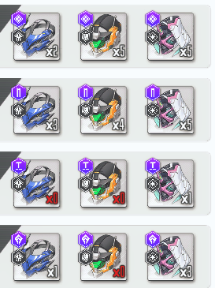
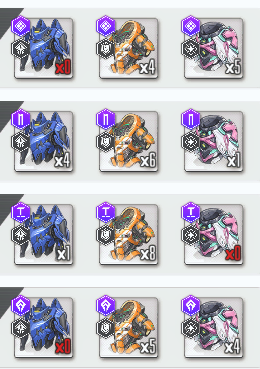
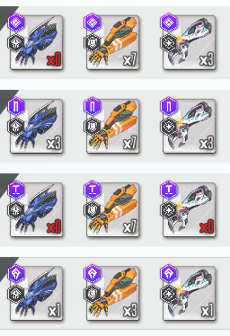
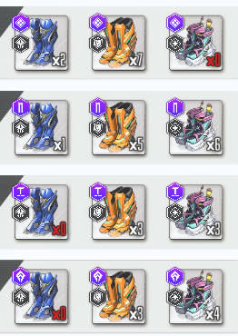
여전히 없거나 스페어 부족한 장비들이 많은 상황
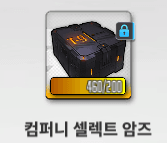
협전 고철상점 덕분에 억까로 아무리 안 나오는 장비 문제는 이걸로 해결이 가능하지만 이걸 믿고 장비를 안 캐는 건 말이 안 된다.
앞서 말했듯 이건 한 달에 1개 좀 넘게 주는 정도이고, 솔로레이드는 매달 해서 접대 캐릭이 한 달에 1개 이상 꼴로 나오는데 이걸로 장비 4개를 만들 순 없다.
협전 장비선택권은 어디까지나 특특요 장비 억까당하는거 보충하는 용도일 뿐
본인 기준 두 세 달 전까진 쌓아놓은 장비들이 있었어서 컴퍼티 셀렉트 암즈도 1200개 넘게 있었는데,
쌓아놓은 장비들이 거의 다 떨어져 간 시점부터 순식간에 보유량이 줄었다
그런 의미에서 깡오버는 말이 안 되는 전략이다.
기업장비, 모듈, 장비강화재료 중 가장 가치가 높은 것이 기업장비인데
가장 가치가 높은 기업장비만 소모하고 모듈과 강화재료는 소모하지 않는다?
말이 안 되는 전략이라고 볼 수 있다
기업장비를 소모해서 오버장비를 만든다는 선택을 할 떄는
반드시 모듈이나 장비강화 재료를 함께 소모해야한다
쌀먹 딜러
최소한 4310 + 우코 한 줄 이라도 줄 생각으로 오버장비를 주자
그럴 모듈이나 강화재료가 없다면 키울 생각을 하지 말자
4우는 부담이고 3우는 할만하다 라고 생각이 들면 이렇게 주도록 하자
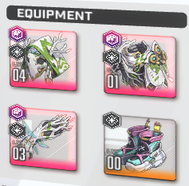
오버장비를 만들었으면 옵션을 뭐라도 뽑도록 하자. 안 그러면 장비 낭비다.
시공증 서포터
본인은 시공증 서포터는 기본적은 이런식으로 장비를 준다
토브
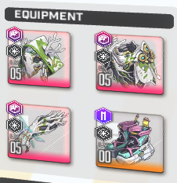
시공증 수치가 너무나 높아서 5550을 주는데 신발은 당연히 기업장비를 아낀다
민트
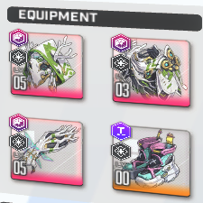
시공증 서폿이긴 한데 토브 마스트 급으로 수치가 높은건 아니고 대부분 솔레에서 짬덱이라서 장비강화 우선순위가 생각보다는 낮다
그래도 장비강화재료가 남아서 5530까지는 줬다
신발은 당연히 기업장비를 아낀다
프리카
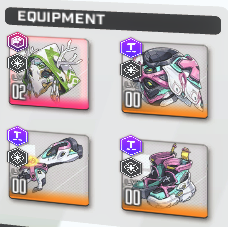
프리카가 사실 좀 애매한 영역
시공증 수치는 스킬 레벨에 따라 17-20 정도로 상당히 낮은 편이라 장비강화효율이 별로 안 좋은 편
오버를 줄 거면 레벨도 어느정도 줄 생각으로 줘야한다
프리카가 애매한 이유는 얜 장탄을 달아주는게 좋은데
어차피 장탄을 찾을거면 뚝장갑 최소 3장비는 깡오버를 올린 후 여전히 장탄이 없으면 그 때 장탄을 찾는게 이득같아 보인다
근데 장탄 찾자고 기업장비 낭비하는 것도 많이 아까운 부분
공격력 높인다고 기업장비 주기엔 시공증 수치가 많이 낮다
본인은 노장탄이라서 솔레 때 버충 좋은 3버를 함께 조합해서 사용 중인데 솔직히 조합 구성에서 불편한 부분이긴 하다
벨벳
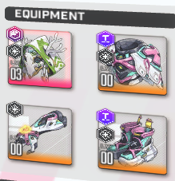
기업장비 안 주는 걸 추천하지만 본인은 풍압솔레 때 절박해서 뚝만 줌...
시공증 25% 정도로 프리카보단 높긴한데 풍압에서만 쓰니깐 당연히 효율이 좋진 않다
바이드
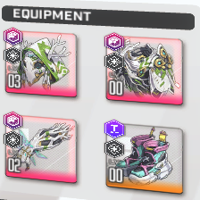
부적절한 예시
뚝장 3레벨 2레벨 까지는 좋은데 갑바 0레벨은 솔직히 좀 아쉽다
기업장비 5레벨 -> 오버장비 0레벨에서 오르는 공격력 수치가 그리 높지 않은데 기업장비를 소모한 것은 많이 아쉽다
장탄 한 줄이 필요해서 갑옷 오버를 올린 것이 아니라면 불필요하게 장비를 올린 경우라고 볼 수 있다
아무튼 장비 레벨을 높여줄거라면
뚝장갑 깡오버 올리기 -> 뚝장갑 431 레벨 맞추기 : 이 전략은 부적절
뚝 오버 3레벨 정도 올려놓기 -> 장 오버 2레벨 정도 올려놓기
이런 방식이 더 합리적이라고 생각한다.
(엄밀한 최적화 방법 같은건 생각 안 해봄)
목단
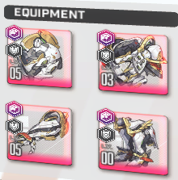
목단은 이야기가 조금 다르다
어차피 방어형은 기업장비가 남아돌기 때문에 오버장비를 올릴 때 소모되는 재화는 사실상 모듈 한개일 뿐
방어형의 경우엔 예외적으로 깡오버를 얼마든지 해도 상관이 없다
사실 메스트, 플로라 이런 니케들도 스테이지 전투력을 고려하지 않는다면 기업신발은 올리지 않는 게 좋다.
근데 스테이지 밀 때는 투력도 중요하니깐... 그건 알아서 하도록 하자.
요약
1. 기업장비는 모듈보다 가치가 높은 재화로 취급해야 한다
2. 0레벨+무효옵 오버장비는 절대로 만들지 말자
3. 오버장비를 올렸으면 반드시 장비강화 or 옵션찾기 중 뭐라도 하도록 하자